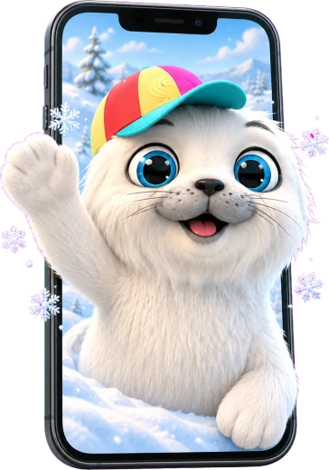

Fifi
foca cea flămândă · joc pentru sunetul F
Jocul vine în curând!
Un joc logopedic gratuit, pentru logopezi și părinți: silabe, cuvinte, propoziții și auz fonematic, alături de Fifi și prietenii ei.
prof. logoped Manuela SurleaJoc gratuit · nu colectează date personale